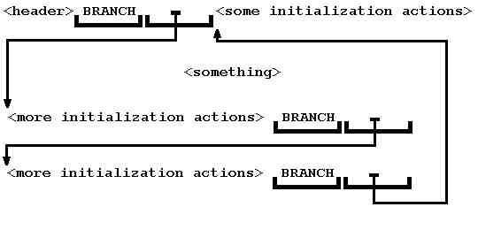

So, the problem is that initialization actions belong to two different modules at the same time: to the module they initialize and to the general initialization module. We want to distribute these actions so that they will be located in the modules they initialize, but used as a single definition.
: INIT ... <some initialization actions> ;The generated code looks like this:
<something>
..: INIT <more initialization actions> ;..
<something>
..: INIT <more initialization actions> ;..
<and so on>

The implementation code below is unstandard, but very portable.
With the definitions:
\ fetch/store a reference that e.g. follows a BRANCH
: REF@ ( orig -- dest ) DUP @ + ;
\ the branch addresses
: REF! ( dest orig -- ) TUCK - SWAP ! ;
\ are relative
\ add size of a compiled token
: TOKEN+ ( addr -- addr' ) CELL+ ;
We might define:
: >MARK ( -- orig ) HERE 0 , ;
: >RESOLVE ( orig -- ) HERE SWAP REF! ;
: <MARK ( -- dest ) HERE ;
: <RESOLVE ( dest -- ) HERE CELL ALLOT REF! ;
And now we can define:
: ... COMPILE BRANCH >MARK >RESOLVE ; IMMEDIATE
: ..: ' >BODY TOKEN+ DUP REF@ SWAP >RESOLVE !CSP 400 ] ;
: ;.. 400 ?PAIRS ?CSP COMPILE BRANCH <RESOLVE [COMPILE] [ ;
IMMEDIATE
In F-PC there may be some problems with long jumps and long addresses. Note that a new branching word is defined:
: BRANCHL 2R> REF@ 2>R ;
F-PC with its double-cell addresses isn't well-suited for return address manipulations and code generation tricks. The F-PC code is given below:
anew scatter.seq
: REF@L ( orig-seg orig-off --- dest-seg dest-off )
2DUP
2+ @L XSEG @ + -ROT @L ;
: REF!L ( dest-seg dest-off orig-seg orig-off --- )
2DUP
2>R !L XSEG @ - 2R> 2+ !L ;
: TOKEN+ 2+ ;
: >MARKL ( -- Dorig ) XHERE 0 0 X, X, ;
: >RESOLVEL ( Dorig -- ) XHERE 2SWAP REF!L ;
: <MARKL ( -- Ddest ) XHERE ;
: <RESOLVEL ( Ddest -- ) XHERE 0 0 X, X, REF!L ;
: BRANCHL 2R> REF@L 2>R ;
: >TCODE ( cfa -- seg off ) >BODY @ XSEG @ + 0 ;
: ?PAIRS XOR ABORT" NON-PAIRED WORD" ;
: ... COMPILE BRANCHL >MARKL >RESOLVEL ; IMMEDIATE
: ..: ' >TCODE TOKEN+ 2DUP REF@L 2SWAP >RESOLVEL !CSP 400 ] ;
: ;.. 400 ?PAIRS ?CSP COMPILE BRANCHL <RESOLVEL [COMPILE] [
; IMMEDIATE
In F-PC this problem is usually solved by means of DEFER variables. We think that a special construct is better because it is:
1) laconic;
2) more readable: the purpose may be understood at the first glance;
3) uses no auxiliary names (which have no meaning in itself).
The technique presented here enables programmer to distribute fragments
of code that should execute as one definition across the modules they logically
belong to.
Listing 1 — for the traditional architecture
Listing 2 — for F-PC